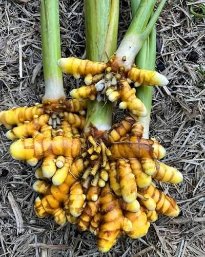

Raw, unpolished turmeric for buyers with processing or specific sourcing requirements.

Raw, unpolished turmeric for buyers with processing or specific sourcing requirements.
We prefer to discuss specific grades, packing, quantities, timing and commercial terms directly rather than publish assumptions that may not fit every buyer.